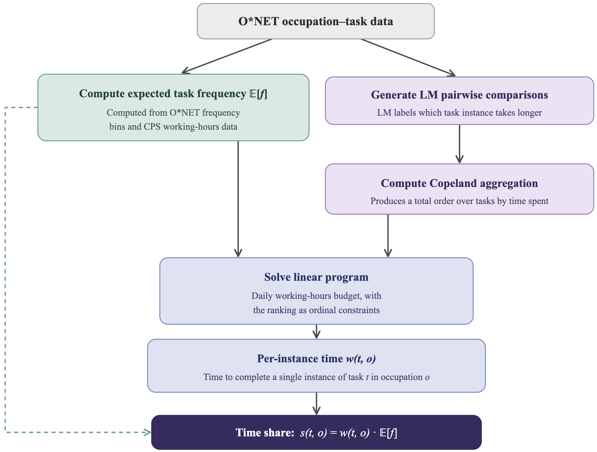

1Stanford University · 2University of São Paulo
Economics models occupations as bundles of tasks. This task-based framework is the standard lens for understanding how technology affects work: a new technology changes the cost or time each task requires, and these task-level effects aggregate to occupation-level effects. But this aggregation requires a choice of how to weight tasks, and prior work has relied on idiosyncratic or ill-justified weights. While recent work suggests weighting tasks by time spent, existing time shares are either based on coarse O*NET data not intended for this purpose or estimated via black-box language models.
We close this gap with a principled method for estimating time shares for nearly 18,000 tasks that constitute nearly all U.S. occupations. Our estimate factors a task's time into (i) the expected frequency of the task, derived from O*NET, and (ii) the time to complete a single instance of it, estimated by solving a constraint satisfaction problem over pairwise comparisons elicited from language models. Applying our time shares to AI exposure, we find that accounting for the share of working time exposed — rather than the share of tasks — widens the gap between the least and most exposed occupations and reshuffles 11 of the 25 occupations widely reported as most exposed in press and policy reports, shifting the top of the list away from clerical work and toward analytical roles.
We release our time share weights for O*NET 30.2, which can be used as a drop-in replacement for existing task weighting schemes.
The task-based framework is the standard lens for understanding how technology affects work, but computing occupation-level quantities requires an aggregation function, and there is no established consensus on how to weight tasks. A natural alternative is to weight tasks proportional to the time workers spend on each. Yet existing time shares are based on coarse O*NET data not intended for this purpose and/or estimated via black-box language models.
Time share is a sensible way to weight tasks when aggregating to the occupation level, but existing time-weights are based on heuristics that need not track time at all or unvalidated, black box language model estimates.
Our work builds on the task-based framework and can substitute for other approaches to task-to-occupation aggregation. While some prior works state the intent of using time share as the aggregation weights, they often do not in practice: most rely on O*NET metadata such as importance scores or the binary core/supplemental classification, which is related to time share but conceptually distinct. Table 1 surveys prior approaches and whether they are intended as proxies for time share.
| Method | Task weights | Measures time share? |
|---|---|---|
| Acemoglu and Autor [2011] | importance | ✗ |
| Brandes and Wattenhofer [2016] | frequency, mapped to time share via constrained LP | ✓ |
| Brynjolfsson et al. [2018] | importance | ✗ |
| Webb [2020] | average of frequency, importance, and task relevance | ✗ |
| Felten et al. [2021] | importance × paper-specific measure | ✗ |
| Martin and Monahan [2022] | frequency × author-assigned time weights | ✓ |
| Eloundou et al. [2024] | task type classification (core vs. supplemental) | ✗ |
| Tamkin and McCrory [2025] | generated by prompting an LLM | ✓ |
| Bouquet and Sheffi [2026] | frequency, mapped to time and normalized per occupation | ✓ |
| Hosseini Maasoum and Lichtinger [2026] | frequency × importance | ✓ |
| Ours | satisfy constraints from frequency data and LM-labeled time rankings | ✓ |
Table 1. Aggregation approaches from tasks to occupations. Prior work often relies on O*NET metadata as-is; our work is the only one to fully estimate time share.
We factorize each estimate into (i) the expected frequency of the task and (ii) the time per single instance of the task. Expected task frequency is computed from O*NET data and U.S. labor data. Because no public dataset reports single-instance durations, and we find that LMs do a poor job of directly outputting sensible estimates, we prompt a LM to rank task pairs by which task takes longer per instance under that assumption that an LM can produce a reasonable ranking. We then aggregate those judgments with the Copeland method, and solve a linear program grounded in those ordinal constraints plus a 7-hour daily-time budget. The time share is then s(t, o) = w(t, o) · E[f(t, o)]. The full pipeline is summarized in Figure 2.

We validate the three components of our method: the size of the feasible set of the constraint problem, the LM-induced ranking of single-instance times, and the expected O*NET daily task frequencies. Across 879 occupations the feasible region is concentrated around our reported solution (the most different sampled weight vectors differ by an average of just 1.5 hours across all tasks, against a 7-hour day). And for full-time workers we recruit from five occupations — human resources managers, lawyers, secretaries and administrative assistants, software developers, and customer service representatives — our LP-implied ranking is positively correlated with the human-induced ranking (Kendall's τ from 0.50 to 0.66), agreeing with the human consensus about as well as a typical individual worker does.
| Occupation | Number of subjects | Ranking corr. between LP‑induced ranking and aggregate human ranking | Mean ranking corr. between each human's ranking and aggregate human ranking [frac. sig.] |
|---|---|---|---|
| Human resources managers | 10 | 0.66** | 0.50 [0.60] |
| Lawyers | 10 | 0.58* | 0.67 [0.90] |
| Secretaries and administrative assistants | 10 | 0.61* | 0.65 [0.80] |
| Software developers | 11 | 0.57* | 0.56 [0.64] |
| Customer service representatives | 11 | 0.50 | 0.46 [0.55] |
Table 2. Agreement between our per-instance task rankings and human rankings, measured by Kendall's τ. The ranking correlation between the LP-induced ranking and the aggregate human ranking compares the ranking implied by our linear program against the Copeland-aggregated human ranking. The mean ranking correlation between each human's ranking and the aggregate human ranking averages Kendall's τ between the aggregate ranking and each individual worker's ranking; the bracketed [frac. sig.] value is the fraction of workers whose individual ranking is significantly correlated (p < 0.05) with the aggregate. * p < 0.05, ** p < 0.01.
Government, industry, and the public are intensely concerned with how AI will affect jobs, and the most-exposed-occupation lists from prior work are widely covered in press — by the Wall Street Journal, Euronews, PCMag, Vice, The Decoder, Business Today, and B&T Magazine — and in policy reports from the U.S. Senate HELP Committee, the Philadelphia Fed, and the ILO. Re-weighting tasks by time share substantially modifies this set: 11 of the top 25 occupations swap out, 9 of them clerical or customer-service roles. Time weights de-emphasize transactional tasks — updating a record, processing a claim, answering an inquiry — because the overall time spent on them is limited, and elevate analytical occupations whose one or two exposed tasks (research, drafting, modeling) consume a lot of time.
Table 3. Occupations that swap in and out of the top 25 most exposed (rubric-based) when switching from task-category weighting to our time-share weighting. 11 / 25 occupations swap out.
Across nearly all U.S. occupations, the general trend is that time weights decrease measured exposure — exposed tasks tend to occupy less worker time — but this pattern reverses for the most exposed occupations. The chart shows the fraction of occupations at or above a given share of tasks exposed to AI, comparing our time-share weighting against the core/supplemental weighting of Eloundou et al. [2024], under both rubric-based and simulation-based exposure measures.